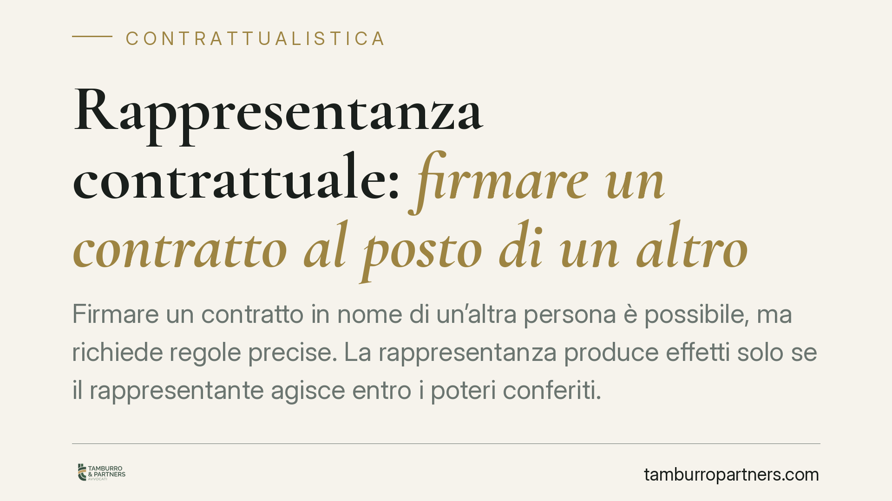

Rappresentanza contrattuale: firmare un contratto al posto di un altro
Firmare un contratto in nome di un'altra persona è possibile, ma richiede regole precise. La rappresentanza produce effetti solo se il rappresentante agisce entro i poteri conferiti. Un errore sulla procura, sulla sua estensione o sulla forma può travolgere il contratto e generare responsabilità personale. Vediamo cosa prevede il Codice civile e come muoversi con ordine.

Il meccanismo della rappresentanza
La rappresentanza consente a un soggetto (il rappresentante) di concludere un contratto in nome e nell'interesse di un altro (il rappresentato). Gli effetti del contratto ricadono direttamente su quest'ultimo, come se lo avesse firmato di persona.
Il punto di partenza è l'art. 1387 c.c.: il potere di rappresentanza nasce dalla legge (rappresentanza legale, per esempio quella dei genitori sul figlio minore) oppure dalla volontà dell'interessato (rappresentanza volontaria). In quest'ultimo caso lo strumento è la procura: l'atto con cui il rappresentato attribuisce al rappresentante il potere di agire per suo conto.
Un principio spesso trascurato è quello dell'art. 1392 c.c.: la procura deve avere la stessa forma richiesta per il contratto che il rappresentante andrà a stipulare. Se il contratto va fatto per atto pubblico o scrittura privata autenticata — come nella compravendita immobiliare — anche la procura deve rispettare quella forma. Una procura firmata senza le formalità necessarie non abilita validamente alla firma.
I limiti del potere e la giustificazione verso i terzi
La procura non è un assegno in bianco. Definisce l'ambito entro cui il rappresentante può muoversi: può essere generale (tutti gli affari del rappresentato) o speciale (un singolo contratto). Agire oltre quei confini significa uscire dal potere conferito, con le conseguenze che vedremo.
L'art. 1393 c.c. tutela il terzo contraente: chi tratta con un rappresentante può sempre esigere che questi giustifichi i propri poteri, chiedendo copia della procura. È un diritto, non una cortesia. Chi firma senza verificare si espone al rischio che l'atto non produca effetti.
Quando il rappresentante eccede: il falso rappresentante
Il nodo più delicato riguarda il cosiddetto *falsus procurator*, disciplinato dall'art. 1398 c.c. Chi conclude un contratto senza avere il potere di rappresentanza, o eccedendone i limiti, non impegna il rappresentato: il contratto resta inefficace nei suoi confronti.
In questo scenario risponde il falso rappresentante. L'art. 1398 c.c. lo obbliga a risarcire il danno che il terzo ha subìto per aver confidato senza colpa nella validità del contratto. La Cassazione ha chiarito che si tratta di responsabilità precontrattuale: il terzo ha diritto al ristoro dell'interesse negativo, cioè delle spese sostenute e delle occasioni perse per aver fatto affidamento su un accordo poi rivelatosi privo di effetti.
Il contratto concluso senza poteri non è però irrimediabilmente perduto. L'interessato può salvarlo con la ratifica (art. 1399 c.c.): approvando successivamente l'operato del rappresentante, il rappresentato fa propri gli effetti del contratto, con efficacia retroattiva. La ratifica deve avere la stessa forma richiesta per il contratto ratificato.
Implicazioni pratiche
Per chi conferisce la procura, il rischio è duplice: attribuire poteri troppo ampi o poteri redatti in modo ambiguo. Nel primo caso ci si espone a impegni non voluti; nel secondo, a contestazioni sulla reale estensione dell'incarico.
Per chi riceve la procura, il rischio è agire oltre i limiti, magari in buona fede, restando esposto a responsabilità personale verso il terzo.
Per il terzo contraente, il pericolo è firmare fidandosi di una procura non verificata o già revocata: se il potere manca, il contratto non lo tutela e dovrà rivolgersi al falso rappresentante, spesso con recupero incerto.
Cosa fare in concreto
- Redigi la procura per iscritto e con la forma richiesta dal contratto da concludere: per gli atti immobiliari, procura notarile.
- Delimita con precisione i poteri: indica oggetto, controparte, valore massimo e durata dell'incarico, evitando formule generiche.
- Se sei il terzo, chiedi sempre copia della procura e verificane la data, l'estensione e l'eventuale revoca prima di firmare.
- Se hai agito senza poteri o oltre i limiti, sollecita la ratifica del rappresentato prima che il terzo faccia valere l'inefficacia.
- Conserva la documentazione di ogni fase: procura, comunicazioni e ricevute utili a provare i poteri esercitati.
La rappresentanza è uno strumento flessibile, ma la sua tenuta dipende dalla precisione dei documenti. Consigliamo di far esaminare procura e contratto prima della firma, soprattutto negli affari di valore rilevante.
---
*Contributo informativo a cura di Tamburro & Partners - Avv. Giuseppe Tamburro. Non costituisce parere legale.*
Ogni contratto ha il suo equilibrio.
Se vuoi una revisione delle clausole o una redazione su misura, scrivi allo studio. Ti rispondiamo entro un giorno lavorativo.